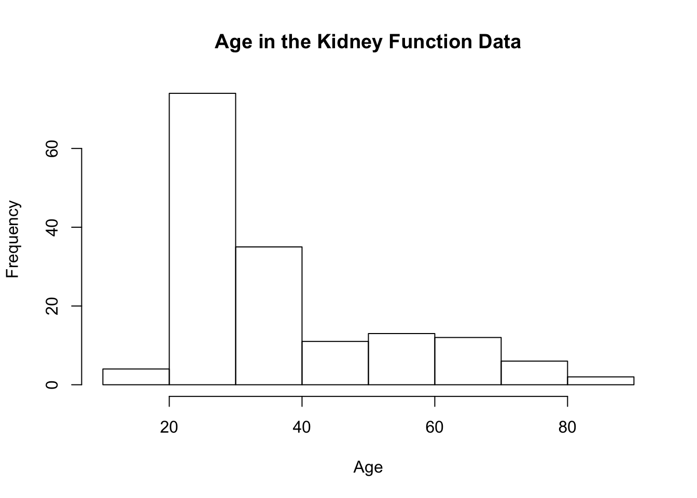

Chapter 8 Density Estimation
8.1 Introduction
- In this section, we focus on methods for estimating a probability density function (pdf) \(f(x)\).
For a continuous random variable \(X\), areas under the probability density function are probabilities \[\begin{equation} P(a < X < b) = \int_{a}^{b} f(x) dx \nonumber \end{equation}\] and \(f(x)\) is related to the distribution function via \(f(x) = F'(x)\).
- With parametric approaches to density estimation, you only need to estimate a couple of parameters as these parameters completely determine the form of \(f(x)\).
- For example, with a Gaussian distribution you only need to estimate \(\mu\) and \(\sigma^{2}\) to draw the appropriate bell curve.
In a nonparametric approach, you assume that your observations \(X_{1}, \ldots, X_{n}\) are an independent sample from a distribution having pdf \(f(x)\), but otherwise you make few assumptions about the particular form of \(f(x)\).
8.2 Histograms

8.2.1 Definition
Histograms are one of the oldest ways to estimate a pdf.
To construct a histogram, you first need to define a series of “bins”: \(B_{1}, \ldots, B_{D_{n}}\).
Each bin is a left-closed interval which is often assumed to have the form \(B_{k} = [x_{0} + (k-1)h_{n}, x_{0} + kh_{n})\): \[\begin{eqnarray} B_{1} &=& [x_{0}, x_{0} + h_{n}) \nonumber \\ B_{2} &=& [x_{0} + h_{n}, x_{0} + 2h_{n}) \nonumber \\ &\vdots& \nonumber \\ B_{D_{n}} &=& [x_{0} + (D-1)h, x_{0} + D_{n}h_{n}) \nonumber \end{eqnarray}\]
- \(x_{0}\) - the origin
- \(h_{n}\) - bin width
\(D_{n}\) - number of bins
For each bin, you first need to count the number of observations which fall into that bin \[\begin{eqnarray} n_{k} &=& \# \text{ of observations falling into the $k^{th}$ bin } \nonumber \\ &=& \sum_{i=1}^{n} I( x_{0} + (k-1)h_{n} \leq X_{i} < x_{0} + kh_{n} ) \end{eqnarray}\]
The histogram estimate of the density at a point \(x\) in the \(k^{th}\) bin is then defined as \[\begin{equation} \hat{f}(x) = \frac{n_{k}}{nh_{n}} \end{equation}\]
Note: What is often shown in histogram plots are the actual bin counts \(n_{k}\) rather than the values of \(\hat{f}(x)\).
- To see the motivation for the histogram estimate, notice that if we choose a relatively small value \(h_{n} > 0\) \[\begin{equation} P(x < X_{i} < x + h_{n}) = \int_{x}^{x + h_{n}} f(x) dx \approx h_{n}f(x) \end{equation}\]
- The expected value of \(\hat{f}(x)\) is \[\begin{equation} E\{ \hat{f}(x) \} = \frac{1}{h_{n}} P( x_{0} + (k-1)h_{n} \leq X_{i} < x_{0} + kh_{n} ) \approx f(x) \end{equation}\]
8.2.2 Histograms in R
In R, use the hist function
- The breaks argument
- Default is “Sturges”. This is a method for finding the binwidth.
- Can be a name giving the name of an algorithm for computing binwidth (e.g., “Scott” and “FD”).
- Can also be a single number. This gives the number of bins used.
- Could also be a ..
- The probability argument
- The plot argument
Note: The default for R, is to use right-closed intervals \((a, b]\). This can be changed using the right argument of the hist function.

## Use a real dataset here
bodywt.hist2 <- hist(nhgh$wt, main="Hist of BW on Probability Scale", xlab="Body Weight from NHANES", probability=TRUE)
In addition to generating a histogram plot, the histogram function also returns useful stuff.
## [1] "breaks" "counts" "density" "mids" "xname" "equidist"- breaks
- counts
- mids
- density
## [1] 20 40 60 80 100 120 140 160 180 200 220 240## [1] 44 1160 2705 1846 721 212 71 24 7 2 3## [1] 3.237675e-04 8.535688e-03 1.990434e-02 1.358352e-02 5.305372e-03
## [6] 1.559971e-03 5.224430e-04 1.766004e-04 5.150846e-05 1.471670e-05
## [11] 2.207506e-05## [1] 3.237675e-04 8.535688e-03 1.990434e-02 1.358352e-02 5.305372e-03
## [6] 1.559971e-03 5.224430e-04 1.766004e-04 5.150846e-05 1.471670e-05
## [11] 2.207506e-058.2.3 Performance of the Histogram Estimate
8.2.3.1 Bias/Variance Decomposition
- It is common to evaluate the performance of a density estimator through its mean-squared error (MSE).
- In general, MSE is a function of bias and variance \[\begin{equation} MSE = Bias^2 + Variance \end{equation}\]
- We will first look at the mean-squared error of \(\hat{f}( x )\) at a single point \(x\) \[\begin{eqnarray} \textrm{MSE}\{ \hat{f}(x) \} &=& E\Big( \{ \hat{f}(x) - f(x) \}^{2} \Big) \nonumber \\ &=& \underbrace{\Big( E\{ \hat{f}(x) \} - f(x) \Big)^{2} }_{\textrm{Bias Squared}} + \underbrace{\textrm{Var}\{ \hat{f}(x) \}}_{\textrm{Variance}} \nonumber \end{eqnarray}\]
- In general, as the bin width \(h_{n}\) increases, the histogram estimate has less variation but becomes more biased.
8.2.3.2 Bias and Variance of the Histogram Estimate
- Recall that, for a histogram estimate, we have \(D_{n}\) bins where the \(k^{th}\) bin takes the form \[\begin{equation} B_{k} = [x_{0} + (k-1)h_{n}, x_{0} + kh_{n}) \nonumber \end{equation}\]
- For a point \(x \in B_{k}\), that “belongs” to the \(k^{th}\) bin, the histogram density estimate is \[\begin{equation} \hat{f}(x) = \frac{n_{k}}{nh_{n}}, \quad \textrm{ where } n_{k} = \textrm{ number of observations falling into bin } B_{k} \end{equation}\]
- To better examine what happens as \(n\) changes, we will define the function \(A_{h_{n}}(x)\) as the function which returns the index of the interval to which \(x\) belongs.
- For example, if we had three bins \(B_{1} = [0, 1/3)\), \(B_{2} = [1/3, 2/3)\), \(B_{3} = [2/3, 1)\) and \(x = 1/2\), then \(A_{h_{n}}( x ) = 2\).
- So, we can also write the histogram density estimate as \[\begin{equation} \hat{f}(x) = \frac{n_{A_{h_{n}}(x)}}{nh_{n}} \end{equation}\]
- Note that \(n_{A_{h_{n}}(x)}\) is a binomial random variable with \(n\) trials and success probability \(p_{h_{n}}(x)\) (why?) \[\begin{equation} n_{A_{h_{n}}(x)} \sim \textrm{Binomial}\{ n, p_{h_{n}}(x) \} \nonumber \end{equation}\]
- The success probability \(p_{h_{n}}(x)\) is defined as \[\begin{equation} p_{h_{n}}(x) = P\Big\{ X_{i} \textrm{ falls into bin } A_{h_{n}}(x) \Big\} = \int_{x_{0} + (A_{h_{n}}(x) - 1)h_{n}}^{x_{0} + A_{h_{n}}(x)h_{n} } f(t) dt. \end{equation}\]
- Using what is known about the Binomial distribution (i.e., \(E( n_{A_{h_{n}}(x)} ) = np_{h_{n}}(x)\) and \(\textrm{Var}( n_{A_{h_{n}}(x)} ) = np_{h_{n}}(x)\{1 - p_{h_{n}}(x) \}\)), we can express the bias and variance of \(\hat{f}(x)\) as \[\begin{eqnarray} \textrm{Bias}\{ \hat{f}(x) \} &=& E\{ \hat{f}(x) \} - f(x) \nonumber \\ &=& \frac{1}{nh_{n}}E( n_{A_{h_{n}}(x)} ) - f(x) \nonumber \\ &=& \frac{ p_{h_{n}}(x) }{ h_{n} } - f(x) \nonumber \end{eqnarray}\] and \[\begin{eqnarray} \textrm{Var}\{ \hat{f}(x) \} = \frac{1}{n^{2}h_{n}^{2}}\textrm{Var}( n_{A_{h_{n}}(x)} ) = \frac{ p_{h_{n}}(x)\{1 - p_{h_{n}}(x) \} }{ nh_{n}^{2} } \end{eqnarray}\]
- Using the approximation \(f(t) \approx f(x) + f'(x)(t - x)\) for \(t\) close to \(x\), we have that \[\begin{equation} \frac{ p_{h_{n}}(x) }{ h_{n} } = \frac{1}{h_{n}}\int_{x_{0} + (A_{h_{n}}(x) - 1)h_{n}}^{x_{0} + A_{h_{n}}(x)h_{n} } f(t) dt \approx f(x) + f'(x)\{ x - x_{0} - (A_{h_{n}}(x) - 1)h_{n} \} \end{equation}\]
- So, the bias of the histogram density estimate \(\hat{f}(x)\) is \[\begin{equation} \textrm{Bias}\{ \hat{f}(x) \} \approx f'(x)\{ x - (x_{0} + (A_{h_{n}}(x) - 1)h_{n}) \} \end{equation}\]
- [[ Double-check this bias formula and check with Scott ]]
- Choosing a very small bin width will result in a small bias because the left endpoint of the bin \(x_{0} + (A_{h_{n}}(x) - 1)h_{n}\) will always be very close to \(x\).
- Now, turning to the variance of the histogram estimate \[\begin{equation} \textrm{Var}\{ \hat{f}(x) \} = \frac{p_{h_{n}}(x) }{nh_{n}^{2}}\{1 - p_{h_{n}}(x)\} \approx \frac{f(x) + f'(x)\{ x - x_{0} - (A_{h_{n}}(x) - 1)h_{n} \}}{nh_{n}}\{1 - p_{h_{n}}(x)\} \approx \frac{f(x)}{n h_{n} } \end{equation}\]
- For a more detailed description of the above approximation see Scott.
- Note that large bin widths will reduce variance.
8.2.3.3 Point-wise Mean Squared Error
- Recalling (), the approximate mean-squared error of the histogram density estimate at a particular point \(x\) is given by \[\begin{eqnarray} \textrm{MSE}\{ \hat{f}(x) \} &=& E\Big( \{ \hat{f}(x) - f(x) \}^{2} \Big) \nonumber \\ &=& \Big( \textrm{Bias}\{ \hat{f}(x) \} \Big)^{2} + \textrm{Var}\{ \hat{f}(x) \} \nonumber \\ &\approx& [f'(x)]^{2}\{ x - (x_{0} + (A_{h_{n}}(x) - 1)h_{n}) \}^{2} + \frac{f(x)}{n h_{n} } \end{eqnarray}\]
- For any approach to bin width selection, we should have \(h_{n} \longrightarrow 0\) and \(nh_{n} \longrightarrow \infty\).
- This MSE approximation depends on a particular choice of \(x\).
- Difficult to use () as a criterion for selecting the bandwidth because this could vary depending on your choice of \(x\).
8.2.3.4 Integrated Mean Squared Error and Optimal Histogram Bin Width
- Using mean integrated squared error (MISE) allows us to find an optimal bin width that does not depend on a particular choice of \(x\).
- The MISE is defined as \[\begin{eqnarray} MISE\{ \hat{f}(x) \} &=& E\Big\{ \int_{-\infty}^{\infty} \{ \hat{f}(x) - f(x) \}^{2}dx \Big\} \nonumber \\ &=& \int_{-\infty}^{\infty} \textrm{MSE}\{ \hat{f}(x) \} dx \end{eqnarray}\] Using our previously derived approximation for the MSE, we have \[\begin{eqnarray} MISE\{ \hat{f}(x) \} &\approx& \int x [f'(x)]^{2} - x_{0}\int [f'(x)]^{2} dx + (A_{h_{n}}(x) - 1)h_{n}) \}^{2} + \frac{1}{n h_{n} } \int f(x) dx \nonumber \\ &=& \end{eqnarray}\]
- To select the optimal bin width, we minimize the MISE as a function of \(h_{n}\).
- Minimizing (), as a function of \(h_{n}\) yields the following formula for the optimal bin width \[\begin{equation} h_{n}^{opt} = \Big( \frac{6}{n \int_{-\infty}^{\infty} [f'(x)]^{2} dx} \Big)^{1/3} = C n^{-1/3} \nonumber \end{equation}\]
- Notice that \(h_{n}^{opt} \longrightarrow 0\) and \(nh_{n}^{opt} \longrightarrow \infty\) as \(n \longrightarrow \infty\).
- Notice also that the optimal bin width depends on the unknown quantity \(\int_{-\infty}^{\infty} [f'(x)]^{2} dx\).
8.2.4 Choosing the Histogram Bin Width
- We will mention three rules for selecting the bin width of a histogram.
- Scott rule: (based on the optimal bin width formula)
- Friedman and Diaconis rule (also based on the optimal bin width formula)
- Sturges rule: (based on …)
- Both Scott and the FD rule are based on the optimal bin width formula ().
- The main problem with this formula is the presence of \(\int_{-\infty}^{\infty} [f'(x)]^{2} dx\).
- Solution: See what this quantity looks like if we assume that \(f(x)\) corresponds to a \(N(\mu, \sigma^{2})\) density.
With this assumption, \[\begin{equation} h_{n}^{opt} = 3.5 \sigma n^{-1/3} \end{equation}\]
Scott rule: use \(\hat{\sigma} = 2\)